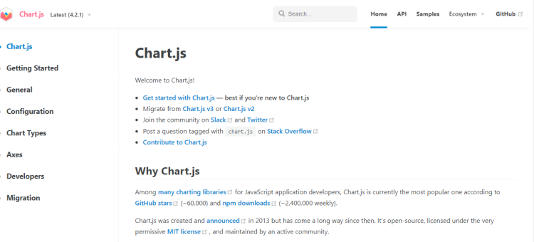
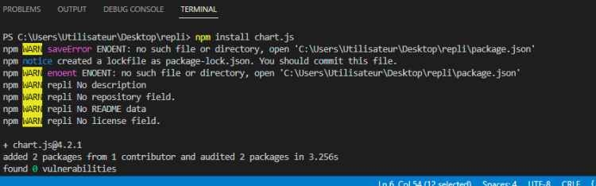
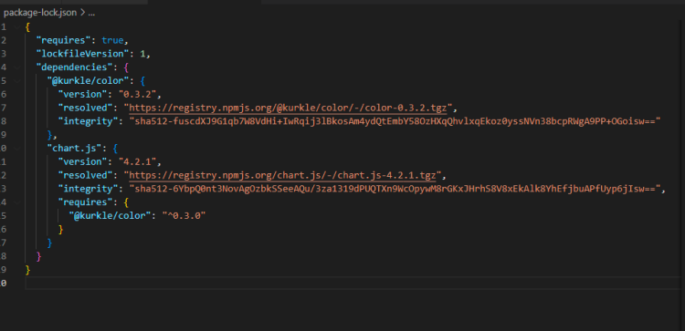
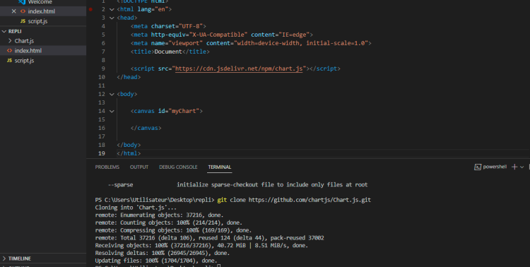

Dans l’environnement Javascript, Chart.js et Plotly.js sont des librairies très populaires dont l’objet est de permettre la mise en place de graphique. Le rendu de ces graphiques peut s’effectuer en front ou en back.
Régulièrement, vous serez amené à faire un choix dans l’utilisation des librairies que vous allez utiliser. Ces choix vous amèneront à vous interroger sur :
Le choix d’une librairie se fait en fonction de critères spécifiques, notamment :
Au regard de ces critères précis et factuels se dégagent 2 grandes librairies : Chart.js et Plotly.js. La connaissance d’au moins une de ces librairies peut s’avérer nécessaire dans un certain nombre de situations. Ce cours va vous présenter Chart.js.
Vous serez confronté dans votre carrière à l’obligation d’enrichir vos pages web avec des graphiques, des éléments dynamiques, etc. C’est donc le moment de voir le fonctionnement et les avantages d’une librairie.
En ce qui concerne Chart.js, elle vous permettra d’assurer le rendu de vos graphiques en évitant des heures de codes et donc cela vous permettra d’optimiser votre temps de production. Comme cela sera détaillé plus tard, il est temps de faire un point sur votre environnement de travail.
Chart.js est une librairie Javascript qui est compatible avec l’ensemble des frameworks modernes comme React, Vue, Svelte, etc.
Mais aussi dans l’environnement Chart.js nous retrouvons des éléments HTML avec la balise <canvas> </canvas>. Nous reviendrons sur la balise Canvas ultérieurement.
C’est donc un environnement essentiellement front end que vous aurez à mettre en place.
Avant de procéder à l’installation de la librairie il est important que vous ayez l’habitude de naviguer dans la documentation pour approfondir et continuer l’apprentissage de cette librairie.
Le document est disponible sur le lien suivant : chartjs.org
Tout d’abord à gauche de votre écran, vous vous apercevez qu’il existe une colonne dans laquelle figure un certain nombre d’onglets mais pour cette introduction nous nous bornerons aux onglets suivants :
L’onglet Getting Started est celui qui vous permettra de commencer votre projet et d’aller chercher les cdn et autres éléments nécessaires à l’installation. L’onglet Configuration sera plus important car il contient toutes les options dont vous aurez besoin, affichage du nom du graphique, etc. Enfin le dernier onglet est l’onglet qui vous permettra de retrouver l’ensemble des types de graphiques qui sont possibles.
Une attention toute particulière doit être portée à la version que vous vous apprêtez à télécharger, c’est pour cela que si vous observez la documentation vous pourrez constater qu’il existe un onglet déroulant reprenant la dernière version mais aussi les versions précédentes.
Sources: chartjs.org
Il est possible d’installer Chart.js de différentes manières. Vous verrez dans les chapitres suivants comment effectuer cette installation.
Tout d’abord commençons par ce qui fait le quotidien des développeurs Javascript NPM. Comme vous l’avez appris, NPM est le gestionnaire de paquets pour Javascript.
Pour commencer l’installation, il est nécessaire de créer notre premier fichier HTML, pour cela vous devez ouvrir votre IDE et créer un fichier HTML.
See the Pen Untitled by OpenSpirit (@OpenSpirit) on CodePen.
Dans la partie suivante, nous allons procéder à l’installation concrète de la librairie via NPM mais il sera nécessaire de vous assurer que Node.js est bien installé. Pour cela, vous devrez ouvrir votre invite de commande et taper node -v.. Normalement cela devrait vous afficher la version installée sur votre ordinateur.
Cette étape réalisée, il est maintenant impératif d’ouvrir votre terminal et de taper la commande suivante :
See the Pen Untitled by OpenSpirit (@OpenSpirit) on CodePen.
Vous devrez obtenir, si tout s’est bien passé, le visuel suivant :
Comme vous le voyez sur l’image ci-dessus, Chart.js est installé et 2 packages ont bien été installés. Vous constaterez d’ailleurs que dans l'arborescence de votre dossier, il existe maintenant un fichier node.
Cette installation a d’ailleurs généré un fichier Json dans l'arborescence de votre dossier. Si vous l’ouvrez, vous aurez ce qui suit :
Cette installation ne présente aucune difficulté, car elle se limite à un simple copier-coller de liens figurant dans les bibliothèques suivantes. Ces liens doivent être copiés entre la balise <head> </head> et en fin de page avant la fermeture de la balise <body>. Pour disposer du lien, il est impératif d’aller sur la documentation et d’ouvrir l’onglet Getting Started.
Au titre des avantages de ce type d’installation, est soulignée la simplicité de l’installation qui se résume à un simple copier-coller du lien. L'inconvénient majeur est le fait que cela n’est qu’un lien, donc en cas de changement d’adresse du lien, votre application ne fonctionnera plus. Cela peut être particulièrement embêtant.
L’avantage d’une telle installation est la sécurité que cela engendre contrairement à un simple CDN, la librairie étant mise dans votre App, il n’y a pas de risque qu’elle soit déplacée et qu’elle impacte directement le rendu de vos graphiques. Pour procéder à l’installation via GitHub, il n’est pas nécessaire de disposer d’un compte GitHub, mais bien entendu, la maîtrise d’un instrument de versioning est un requis pour tout futur développeur. Pour télécharger le code, rendez-vous sur le lien contenu dans la documentation. Pour réaliser cette démarche, ouvrez un terminal comme le démontre l’image ci-après. L’installation via GitHub se fait par l’utilisation de la commande : git clone.
Il est important de noter que lorsque Chart.js est téléchargé directement depuis le repository GitHub, celui-ci ne contient plus toutes les dépendances. Il est donc nécessaire de procéder à l’ajout d’un script autonome, en l'occurrence il s’agit de pnpm.
Pour cela il est nécessaire d’ouvrir un terminal et de taper la commande suivante :
See the Pen Untitled by OpenSpirit (@OpenSpirit) on CodePen.
Cette commande vous permettra d’installer Chart.js et installera l’ensemble des dépendances nécessaires au bon fonctionnement de la librairie.
Tout graphique réalisé grâce à Chart.js débutera par un certain nombre de nécessités et nous imposera un certain formalisme. Tout d’abord il nous faudra implanter une div sur notre fichier HTML qui contiendra un ID, que vous pourrez nommer comme vous le souhaitez. Pour la suite de ce cours et pour en faciliter la suite, l’ID sera identifié sous « myChart », mais il n’y aucune obligation de conserver la dénomination de l’ID.
See the Pen Untitled by OpenSpirit (@OpenSpirit) on CodePen.
Comme vous le constatez, le départ du graphique se fait par la mise en place d’une balise <canvas> </canvas>. C’est une balise qui s’ouvre et qui se ferme, dédiée à l’environnement des graphiques. Prise seule, cette balise est une image et elle ne fournit aucune aide pour l’accessibilité, il est donc nécessaire de ne pas se servir seulement de cette balise pour répondre aux besoins d'accessibilité. L'élément canvas est un nouvel élément HTML qui est associé généralement à des scripts en Javascript. Il permet aux développeurs front de composer des graphiques et s’avère plus rapide au chargement.
Pour simplifier la démarche et la compréhension, nous allons mettre en place Chart.js avec un lien CDN.
See the Pen Untitled by OpenSpirit (@OpenSpirit) on CodePen.
Le lien CDN est à mettre entre les balises <head></head>, il s’agit de la même démarche que celle qui consiste à utiliser le lien bootstrap. Le lien copié, il est maintenant nécessaire de mettre en place notre Javascript. Pour cela et pour simplifier le cours, nous utiliserons la balise script dans notre fichier HTML. Néanmoins il aurait été tout aussi possible d’injecter notre Javascript en créant un fichier dédié, appelé script.js. Sur notre fichier js figurera le code qui nous permettra de mettre en action.
See the Pen Untitled by OpenSpirit (@OpenSpirit) on CodePen.
Lien ReplitUne lecture de notre code nous donnera les clés pour comprendre ce que nous venons de faire. Tout d’abord nous avons passé un ID « myChart » dans la balise canvas. Cet ID a été récupéré grâce à la méthode du document.querySelector. Nous avons ensuite utilisé new chart. Cette syntaxe est un impératif imposé par Chart.js.
Dans cette variable nous avons mis en place la balise ctx (context = getContext). Cette syntaxe est là aussi imposée par Chart.js. En effet, cette méthode nous est imposée par l’utilisation de la balise <canvas>.
Enfin, nous avons créé un objet dans lequel nous avons défini l’ensemble des données de notre graphique, son type, ses datas, etc.
Vous le remarquerez en lisant le code, il y a un ensemble d'options qui sont possibles, il existe d'autres types de graphiques possibles avec cette librairie.
Sans citer tous les graphiques, il est néanmoins possible d’en dégager trois ou quatre types que nous rencontrons régulièrement :
Data et datasets sont 2 éléments incontournables de Chart.js. Data est avant tout un objet qui contiendra un ensemble de données telles que décrit dans l’exemple ci-après. Cet exemple vous montre ce que sont les datas dans chart.js et ce qu’il contient.
See the Pen Untitled by OpenSpirit (@OpenSpirit) on CodePen.
Dans cet objet sera inclus l’ensemble des variables qui feront l’objet d’un graphique.
Pour ce qui est de Datasets, il s’agit de transcrire une donnée qui est un tableau qui contiendra des objets tels que vous le voyez ci-dessous.
See the Pen Untitled by OpenSpirit (@OpenSpirit) on CodePen.
Datasets contiendra donc les variables suivantes :
Une option est un objet dans lequel nous plaçons d’autres objets comme le montre le code ci-dessous.
Une option particulièrement intéressante est chartContainer qui permettra d’assurer les aspects responsive de votre graphique.
See the Pen Untitled by OpenSpirit (@OpenSpirit) on CodePen.
L’inconvénient du genre de structure proposé par Chart.js se situe au niveau de la maintenabilité du code, dès qu’un graphique s’avère plus complexe. En effet, chaque option se déclare dans un objet. De fait, si le graphique est complexe, le code peut vite devenir compliqué à lire. Comme le montre le code ci-après.
Les graphiques développés via Chart.js ne commencent pas au zéro sur les axes des X et Y, il peut donc être important de paramétrer le début de la numération en paramétrant le y comme débutant à 0.